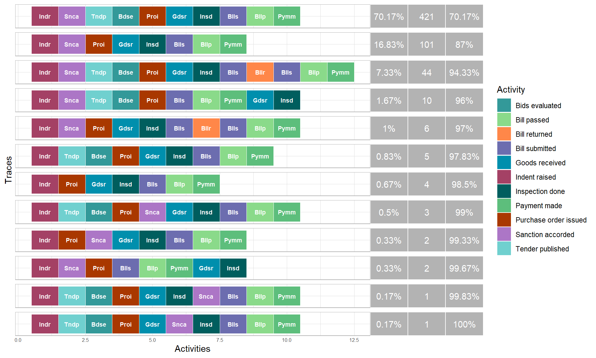
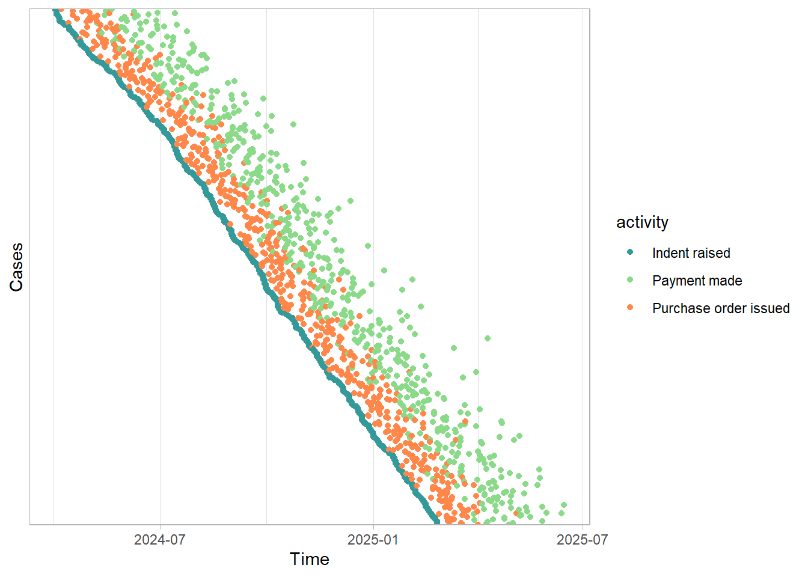

library(tidyverse)
library(bupaR) # event logs
library(processmapR) # process maps and trace explorer
library(edeaR) # process statistics and filters
library(processcheckR) # rule checks36 Process Mining
Most audit tests look at transactions: amounts, dates, payees. But every transaction is the end of a process. A purchase starts with an indent, needs a sanction, a tender, a purchase order, receipt and inspection of the goods, a bill, and only then a payment. The rules of the process exist for good reasons. Sanction must come before commitment. Goods must be received and inspected before they are paid for. The person who passes a bill must not be the person who makes the payment.
Today, most of these processes run through computer systems: e-procurement portals, IFMS, ERP systems, hospital management systems. Every system records each step as an event: which case it belongs to, what was done, when, and by whom. Process mining reads these event records and reconstructs the process as it actually happened, file by file. It answers questions that are very hard to answer by looking at transactions alone.
- What paths do the files actually follow, and how many follow the prescribed one?
- Which files skipped a step, or did steps in the wrong order?
- Where does the process wait, and for how long?
- Who did what, and did anyone do two things they should not both do?
In this chapter we use the bupaR family of packages: bupaR for event logs, processmapR for process maps, edeaR for statistics, and processcheckR for checking rules.
Prerequisites
Install them once with install.packages(c("bupaR", "processmapR", "edeaR", "processcheckR")).
36.1 Event logs
Process mining needs an event log, a table with at least three columns.
- Case: the file or object that goes through the process, like a purchase file number, a pension case number, or a patient’s admission number.
- Activity: what was done, like “Bill passed”.
- Timestamp: when it was done.
A fourth column, the resource, the user or office who did it, is not essential but is very valuable in audit. Such logs are rarely handed over as such. They are usually extracted from the audit trail tables of a system, which record every action of every user. Asking the auditee’s IT section for “the audit trail of the procurement module for the year, with case number, action, date-time and user” is often the first step.
36.2 Our data, a year of purchase files
We have the event log of 600 purchase files of a department for 2024-25, extracted from its procurement system. The prescribed process for a purchase is:
- Indent raised (stores)
- Sanction accorded (drawing and disbursing officer)
- Tender published, and bids evaluated (purchase section), except for purchases up to ₹25,000, which in our example may be made without tender
- Purchase order issued
- Goods received (stores), and inspection done (technical section)
- Bill submitted (accounts), bill passed (accounts officer), payment made (cashier)
Bills found defective are returned and resubmitted, which is a normal variation. Five kinds of irregularity are planted, which we will find.
Code to create the event log
set.seed(2025)
n <- 600
steps <- c("Indent raised", "Sanction accorded", "Tender published", "Bids evaluated",
"Purchase order issued", "Goods received", "Inspection done",
"Bill submitted", "Bill passed", "Payment made")
# average days taken by each step after the previous one
mean_days <- c("Sanction accorded" = 3, "Tender published" = 4, "Bids evaluated" = 15,
"Purchase order issued" = 5, "Goods received" = 20, "Inspection done" = 2,
"Bill submitted" = 4, "Bill passed" = 6, "Payment made" = 5)
staff <- list("Indent raised" = sprintf("STORE%02d", 1:4), "Sanction accorded" = c("DDO01", "DDO02"),
"Tender published" = sprintf("PUR%02d", 1:3), "Bids evaluated" = sprintf("PUR%02d", 1:3),
"Purchase order issued" = sprintf("PUR%02d", 1:3), "Goods received" = sprintf("STORE%02d", 1:4),
"Inspection done" = sprintf("TECH%02d", 1:3), "Bill submitted" = sprintf("ACC%02d", 1:4),
"Bill passed" = c("AO01", "AO02"), "Payment made" = c("CASH01", "CASH02"))
files <- tibble(case_id = sprintf("PF-%04d", 1:n), value = round(rlnorm(n, log(80000), 1.2), -2)) |>
mutate(start = as.POSIXct("2024-04-01 10:00", tz = "Asia/Kolkata") + sample(0:330, n, TRUE) * 86400)
make_file <- function(case_id, value, start) {
acts <- if (value <= 25000) steps[-(3:4)] else steps # small purchases skip the tender
gaps <- c(0, pmax(0.1, rgamma(length(acts) - 1, 2, 2 / mean_days[acts[-1]])) * 86400)
tibble(case_id, activity = acts, timestamp = start + cumsum(gaps),
resource = map_chr(acts, \(a) sample(staff[[a]], 1)), value)
}
log <- pmap(files |> select(case_id, value, start), make_file) |> list_rbind()
# Normal variation. 50 bills returned once and resubmitted, which delays them
returned <- sample(files$case_id, 50)
resubmit <- log |> filter(case_id %in% returned, activity == "Bill submitted")
log <- log |>
mutate(timestamp = if_else(case_id %in% returned & activity %in% c("Bill passed", "Payment made"),
timestamp + 6 * 86400, timestamp)) |>
bind_rows(resubmit |> mutate(activity = "Bill returned", resource = "AO01",
timestamp = timestamp + 2 * 86400),
resubmit |> mutate(timestamp = timestamp + 5 * 86400))
free <- setdiff(files$case_id, returned)
take <- function(k, pool) { chosen <- sample(pool, k); free <<- setdiff(free, chosen); chosen }
# Planted 1. Payment made before the goods were received and inspected
p_pay_first <- take(12, free)
log <- log |>
mutate(last = max(timestamp), .by = case_id) |>
mutate(timestamp = case_when(
case_id %in% p_pay_first & activity == "Goods received" ~ last + 10 * 86400,
case_id %in% p_pay_first & activity == "Inspection done" ~ last + 12 * 86400,
.default = timestamp)) |>
select(-last)
# Planted 2. No sanction at all
p_no_sanction <- take(9, free)
log <- log |> filter(!(case_id %in% p_no_sanction & activity == "Sanction accorded"))
# Planted 3. Sanction given after the purchase order (post-facto sanction)
p_post_facto <- take(7, free)
log <- log |>
mutate(po_time = timestamp[activity == "Purchase order issued"], .by = case_id) |>
mutate(timestamp = if_else(case_id %in% p_post_facto & activity == "Sanction accorded",
po_time + 3 * 86400, timestamp)) |>
select(-po_time)
# Planted 4. The same officer passed the bill and made the payment
p_same_user <- take(10, free)
log <- log |>
mutate(passer = resource[activity == "Bill passed"][1], .by = case_id) |>
mutate(resource = if_else(case_id %in% p_same_user & activity == "Payment made", passer, resource)) |>
select(-passer)
# Planted 5. Purchases above Rs 25,000 made without tender
big <- files |> filter(value > 60000, case_id %in% free) |> pull(case_id)
p_no_tender <- take(6, big)
log <- log |> filter(!(case_id %in% p_no_tender & activity %in% c("Tender published", "Bids evaluated")))
log <- log |> arrange(case_id, timestamp)log# A tibble: 5,861 × 5
case_id activity timestamp resource value
<chr> <chr> <dttm> <chr> <dbl>
1 PF-0001 Indent raised 2024-08-08 10:00:00 STORE03 168500
2 PF-0001 Sanction accorded 2024-08-16 20:39:05 DDO02 168500
3 PF-0001 Tender published 2024-08-19 16:35:52 PUR01 168500
4 PF-0001 Bids evaluated 2024-09-05 09:19:37 PUR02 168500
5 PF-0001 Purchase order issued 2024-09-13 09:53:09 PUR01 168500
6 PF-0001 Goods received 2024-09-15 22:59:19 STORE02 168500
7 PF-0001 Inspection done 2024-09-21 21:34:48 TECH02 168500
8 PF-0001 Bill submitted 2024-09-27 17:02:49 ACC01 168500
9 PF-0001 Bill passed 2024-09-29 00:59:10 AO02 168500
10 PF-0001 Payment made 2024-10-04 02:01:27 CASH01 168500
# ℹ 5,851 more rowseventlog() turns this table into an event log, telling bupaR which column is which. It needs two more columns, which bupaR uses for logs that record the start and the end of each activity separately. In our log each event is recorded once, when it was completed, so we add an activity_instance number for each row and a status column that simply says "complete".
purchases <- log |>
mutate(activity_instance = row_number(), status = "complete") |>
eventlog(case_id = "case_id", activity_id = "activity",
activity_instance_id = "activity_instance", lifecycle_id = "status",
timestamp = "timestamp", resource_id = "resource")
purchases# Log of 5861 events consisting of:
12 traces
600 cases
5861 instances of 11 activities
20 resources
Events occurred from 2024-04-01 10:00:00 until 2025-06-14 22:59:06
# Variables were mapped as follows:
Case identifier: case_id
Activity identifier: activity
Resource identifier: resource
Activity instance identifier: activity_instance
Timestamp: timestamp
Lifecycle transition: status
# A tibble: 5,861 × 8
case_id activity timestamp resource value activity_instance status
<chr> <chr> <dttm> <chr> <dbl> <int> <chr>
1 PF-0001 Indent … 2024-08-08 10:00:00 STORE03 168500 1 compl…
2 PF-0001 Sanctio… 2024-08-16 20:39:05 DDO02 168500 2 compl…
3 PF-0001 Tender … 2024-08-19 16:35:52 PUR01 168500 3 compl…
4 PF-0001 Bids ev… 2024-09-05 09:19:37 PUR02 168500 4 compl…
5 PF-0001 Purchas… 2024-09-13 09:53:09 PUR01 168500 5 compl…
6 PF-0001 Goods r… 2024-09-15 22:59:19 STORE02 168500 6 compl…
7 PF-0001 Inspect… 2024-09-21 21:34:48 TECH02 168500 7 compl…
8 PF-0001 Bill su… 2024-09-27 17:02:49 ACC01 168500 8 compl…
9 PF-0001 Bill pa… 2024-09-29 00:59:10 AO02 168500 9 compl…
10 PF-0001 Payment… 2024-10-04 02:01:27 CASH01 168500 10 compl…
# ℹ 5,851 more rows
# ℹ 1 more variable: .order <int>The printout tells us the essentials: 5,861 events, 600 cases, 11 distinct activities, 20 users, and the number of distinct traces, which we discuss next.
36.3 What paths do the files take?
A trace is the sequence of activities of one case, in time order. If every file followed the prescribed process, there would be just two traces: one with a tender, and one for small purchases without. Let us see how many there are, and how common each is.
n_traces(purchases)[1] 12# A tibble: 12 × 4
steps absolute relative cum_sum
<dbl> <int> <dbl> <dbl>
1 10 421 0.702 0.702
2 8 101 0.168 0.87
3 12 44 0.0733 0.943
4 10 10 0.0167 0.96
5 10 6 0.01 0.97
6 9 5 0.00833 0.978
7 7 4 0.00667 0.985
8 10 3 0.005 0.99
9 8 2 0.00333 0.993
10 8 2 0.00333 0.997
11 10 1 0.00167 0.998
12 10 1 0.00167 1 There are 12 traces. The two most common, the prescribed paths, cover 87% of the files. Everything else is a variant, and every variant needs an explanation. The trace explorer draws them, one row per trace, with each activity as a coloured box, so that the differences can be seen.
purchases |>
trace_explorer(n_traces = 12, label_size = 2.5)
Read each row from left to right. The top two rows are the prescribed paths. Below them we can see bills returned and resubmitted, the normal variation. Then come the real exceptions: rows without a sanction box, rows with payment before receipt of goods, rows where the sanction comes after the purchase order, and rows without the tender boxes. Each is a small number of files.
36.4 A process map
A process map draws traces together as one diagram. Each activity is a box, and each arrow shows how often one activity was directly followed by another. Thick, dark arrows are the main road; thin ones are the side roads. rankdir = "TB" draws the map from top to bottom. Maps are drawn only 300 pixels high by default, which is too small for a process of ten steps, so we write a two-line function to set the height of a map (an htmlwidget, as interactive charts in R are called).
set_height <- function(widget, pixels) {
widget$height <- pixels
widget
}Drawn with every variant at once, a map soon looks like a plate of spaghetti, since every rare deviation adds arrows going back and forth. It is clearer to draw the main road first. filter_trace_frequency(percentage = 0.9) keeps the most frequent traces that together cover 90% of the cases.
purchases |>
filter_trace_frequency(percentage = 0.9) |>
process_map(type = frequency("absolute-case"), rankdir = "TB") |>
set_height(700)Process map of the most frequent traces, with case counts
This is the prescribed process, as most files follow it: the two routes, with and without a tender, joining at the purchase order, and the loop of bills returned and resubmitted. The map is interactive in the HTML version of this book: it can be zoomed and moved.
Now the opposite: only the files outside the main road, with reverse = TRUE. This is the map an auditor is most interested in.
purchases |>
filter_trace_frequency(percentage = 0.9, reverse = TRUE) |>
process_map(type = frequency("absolute-case"), rankdir = "TB") |>
set_height(700)Process map of the less frequent traces
Here the deviations stand out: arrows from Indent raised straight to Tender published or to Purchase order issued, skipping the sanction; arrows from Purchase order issued back to Sanction accorded; and arrows from Payment made to Goods received, payment before receipt. Each arrow is labelled with the number of files taking it.
The same map can show time instead of counts. With performance(), each arrow shows the median time between the two activities.
purchases |>
filter_trace_frequency(percentage = 0.9) |>
process_map(type = performance(median, "days"), rankdir = "TB") |>
set_height(700)Process map with the median days taken between activities
The longest waits are between issuing the purchase order and receiving the goods, and between publishing the tender and evaluating the bids. From indent to payment, a file takes a median of 60 days, and the slowest took 159.
Note
Other filters help to focus a map too: filter_case() for particular files, filter_activity() to keep only some activities, and filter_time_period() for part of the year. A map of each part is usually clearer than one map of everything.
36.5 Checking the rules
Maps show the overall picture. For audit findings we need the exact list of cases breaking each rule. processcheckR expresses process rules declaratively. Some of its rule types are:
| Rule | Meaning |
|---|---|
contains("A") |
A occurs in the case |
precedence("A", "B") |
Every B is preceded by an A |
response("A", "B") |
Every A is followed by a B |
starts("A"), ends("B")
|
The case starts with A, or ends with B |
absent("A") |
A does not occur |
and("A", "B"), xor("A", "B")
|
Both occur, or exactly one of them |
check_rules() checks several rules at once, adding a TRUE/FALSE column for each rule to every event. We keep one row per case.
rule_results <- purchases |>
check_rules(
has_sanction = contains("Sanction accorded"),
sanction_before_po = precedence("Sanction accorded", "Purchase order issued"),
goods_before_pay = precedence("Goods received", "Payment made"),
inspect_before_pay = precedence("Inspection done", "Payment made")
) |>
as_tibble() |>
distinct(case_id, has_sanction, sanction_before_po, goods_before_pay, inspect_before_pay)
rule_results |>
summarise(across(-case_id, \(ok) sum(!ok))) |>
pivot_longer(everything(), names_to = "rule", values_to = "cases_failing")# A tibble: 4 × 2
rule cases_failing
<chr> <int>
1 has_sanction 9
2 sanction_before_po 16
3 goods_before_pay 12
4 inspect_before_pay 12Note that sanction_before_po fails for 16 files. It includes the 9 files with no sanction at all, since a purchase order with no sanction before it also breaks the rule. The remaining 7 had a sanction, but only after the order was placed, a post-facto sanction.
# A tibble: 6 × 3
case_id activity timestamp
<chr> <chr> <dttm>
1 PF-0179 Purchase order issued 2024-06-21 05:59:06
2 PF-0179 Sanction accorded 2024-06-24 05:59:06
3 PF-0222 Purchase order issued 2024-09-06 19:35:52
4 PF-0222 Sanction accorded 2024-09-09 19:35:52
5 PF-0231 Purchase order issued 2024-06-09 06:06:52
6 PF-0231 Sanction accorded 2024-06-12 06:06:52The rule about tenders depends on the value of the purchase, which processcheckR does not know about. Such rules are easiest with dplyr on the log itself: files above ₹25,000 that have no Tender published event.
# A tibble: 6 × 3
case_id value tendered
<chr> <dbl> <lgl>
1 PF-0093 627200 FALSE
2 PF-0409 399100 FALSE
3 PF-0161 111900 FALSE
4 PF-0542 98900 FALSE
5 PF-0221 91500 FALSE
6 PF-0352 82400 FALSE These purchases should have been made through a tender. They may be cases of splitting, of urgency, or of deliberate avoidance of competition, and the files must say which.
36.6 Who did what? Segregation of duties
The resource column lets us check segregation of duties: certain pairs of actions on the same file must be done by different people. The officer who passes a bill must not also make the payment. With pivot_wider() (Chapter 15), we put the user of each activity side by side, one row per file.
# A tibble: 10 × 3
case_id `Bill passed` `Payment made`
<chr> <chr> <chr>
1 PF-0047 AO01 AO01
2 PF-0181 AO02 AO02
3 PF-0203 AO02 AO02
4 PF-0210 AO02 AO02
5 PF-0371 AO01 AO01
6 PF-0385 AO01 AO01
7 PF-0453 AO02 AO02
8 PF-0461 AO02 AO02
9 PF-0506 AO01 AO01
10 PF-0598 AO02 AO02 In these files, one officer passed the bill and then paid it, with no second person to check. The same approach checks any pair of incompatible duties, such as the person who raised the indent also receiving the goods.
A resource map, a process map of who hands the work to whom, shows the same at a glance. Each box is a user, and each arrow a handover.
purchases |>
filter_activity(c("Bill passed", "Payment made")) |>
resource_map(rankdir = "TB") |>
set_height(450)Handover of work between users
Arrows from AO01 or AO02 to CASH01 or CASH02 are the normal handovers. An arrow from an accounts officer to themselves is a file where the same person did both.
36.7 How long do things take?
The time between events is also an audit measure. throughput_time() gives the time from the first to the last event of each case.
case_id throughput_time
1 PF-0178 158.5737 days
2 PF-0590 128.5921 days
3 PF-0406 128.5197 days
4 PF-0380 125.7340 days
5 PF-0146 123.6711 daysBills that are returned and resubmitted take longer. Comparing the two groups shows the cost of defective bills, here a few days on each file.
returned files median_days
1 FALSE 550 60
2 TRUE 50 63A dotted chart shows every event of every file against the calendar, one line per file. It reveals patterns over the year, like a rush of payments in March, or a period when files piled up.
purchases |>
filter_activity(c("Indent raised", "Purchase order issued", "Payment made")) |>
dotted_chart(x = "absolute", sort = "start")
36.8 Using process mining in audit
The same approach applies to any process run through a computer system.
| Process | Case | Typical checks |
|---|---|---|
| Procurement | Purchase file, tender | Sanction before order, tender above limits, goods before payment |
| Pension sanction | Pension case | Verification steps done, time from retirement to first payment |
| Hospital insurance claims | Admission | Pre-authorisation before treatment, discharge before claim |
| Licence or permit issue | Application | Inspection before approval, time taken against service guarantee |
| Grievance redressal | Grievance | Closed without action, reopened cases, delays |
| Revenue refund | Refund claim | Verification before sanction, same user sanctioning and paying |
TipAudit tip
Ask for the system’s audit trail, not a report prepared from it. A report shows what the system’s designers thought worth reporting; the audit trail shows everything that happened, including actions later undone. Check that it is complete: every case in the transaction tables should appear in the log, timestamps should be in one time zone (Section 16.11), and user IDs should match the list of authorised users.
Caution
An event log shows what was recorded in the system, not necessarily what happened. A sanction given on paper but entered in the system late will appear post-facto. A payment entered under another officer’s login will show that officer as the resource. Treat every deviation as a question for the auditee, and confirm it from the files, before reporting it.
36.9 A suggested workflow
- Get the event log: the audit trail of the system, with case, activity, timestamp and user.
- Check the log: completeness against the transaction tables, time zones, and spelling of activity names.
-
Create the event log object with
eventlog(). -
Explore the traces with
trace_coverage()andtrace_explorer(), and draw a process map. -
Write the rules of the process and check them with
check_rules(), addingdplyrchecks for rules that depend on values. - Check segregation of duties from the resource column.
-
Measure times with
throughput_time()and performance maps. - Confirm deviations from the files before reporting.
ImportantRemember
- An event log has, for each event, a case, an activity, a timestamp and, ideally, a user.
- A trace is the sequence of activities of one case; variants from the prescribed trace need explanation.
- Process maps show the actual process, with counts or times on the arrows.
-
processcheckRchecks rules likecontains()andprecedence()case by case. - The user column allows segregation-of-duties checks.
- A deviation in the log is a question, not yet a finding.
36.10 Summary of functions used
| Function | Package | What it does |
|---|---|---|
eventlog() |
bupaR | Create an event log from a table with case, activity, timestamp and resource |
n_cases(), n_activities(), n_resources(), n_traces()
|
bupaR | Counts in the event log |
trace_coverage() |
edeaR | Frequency of each trace |
throughput_time() |
edeaR | Time from first to last event, for the log or each case |
filter_activity(), filter_trace_frequency(), filter_case()
|
edeaR, bupaR | Keep part of the event log |
trace_explorer() |
processmapR | Draw the traces, most frequent first |
process_map(type = frequency(), performance()) |
processmapR | Process map with counts or times |
resource_map() |
processmapR | Map of handovers between users |
dotted_chart() |
processmapR | Events of every case against time |
check_rules(), contains(), precedence()
|
processcheckR | Check process rules, case by case |
pivot_wider() |
tidyr | Users of different activities side by side, for segregation of duties |